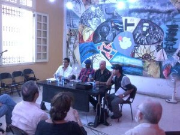
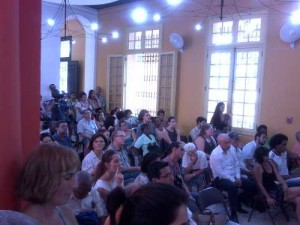

Por Karel Leyva.

El segundo día de “Palabras sobre el Golfo”, Jornada Poética Cuba México que se realiza en la casa del alba desde el pasado 8 de junio reservó emociones especiales. Tres notables ponencias de los escritores Roberto Manzano, Jesús David Curbelo y Javier Villaseñor iniciaron el jueves poético en la sede de la calle Línea.
Manzano reacomodando el prisma que permite apreciar la dimensión exacta de la patria poética cubana, desde el Niágara legado por Heredia a nuestra lírica y revisitado física y escrituralmente por La Avellaneda, Marti, Elisha, Naborí y otros tantos, hasta las incorporaciones temporales de otras zonas y épocas del mundo al discurso fusionador y catalítico que caracteriza buena parte de la creación antillana propone ver a la poesía como uno de los elementos de fijan los detalles del alma nacional por encima de otras artes y propuestas científicas o sociales. Se basa para ello en la intensa tradición que el verso oral y escrito han dejado en la isla desde los primeros escritos sobre el mar hechos por Colón hasta las elevadas cumbres poéticas legadas por las hercúleas voces del Cantor del Niágara, Casal, Marti, Gertrudis, Guillén, Lezama y tantos otros que privilegian a este listín de tierra como uno de los accesos imprescindibles a la historia literaria americana y universal.

Curbelo por su parte retoma la propuesta de Manzano del poeta como un pensador desde el inconsciente colectivo que da voz y nombra las cosas presentes y por venir; misionero y exegeta, que en habitual dicotomía con los pensadores en el poder han sido marginados históricamente por lo que de agitador hay en su discurso. La disímil tonalidad de las propuestas poéticas ha sido el látigo que acendra o desconstruye cualquier propuesta social hecha por los filósofos y los políticos al alejar de las aguas pragmáticas estas opciones y adéntralas al retador océano de las ideas y los sentimientos.El gesto poético por tanto tiene en los últimos tiempos un precio muy alto a pagar, alejado de los grandes ciclos de mercado y con nichos de éxito en festivales como el de Medellín, pero requiere de nuevas estrategias nuevas propuesta de márquetin que se acompasen al cibermundo y a la realidad tradicional donde sigue brotando la poesía.
Javier Villaseñor habla de la conformación de una identidad poética autóctona a partir de las interacciones socioculturales en las que vivió fugazmente el creador mexicano José Carlos Becerra a más de cuatro décadas de su desaparición. Suma con ello una visión genésica de la poesía en su contexto histórico y como la trascendencia puede serle ajena a figuras de notable calidad por lo que de subversora hay en estas.
La tarde entonces reservó dos emocionantes momentos de lecturas con la presencia de los poetas Eduardo Langagne, Javier Villasenor, Jorge Valenzuela por la parte mexicana y Waldo Leyva, Alpidio Alonso, Rito Ramón Aroche y Antonio Borrego, acompañados por el trovador Silvio Rodríguez quien por primera vez leyera públicamente en Cuba su poesía, hecho que ya se había suscitado en otras ciudades del mundo; destacando por este último que dedicaba la lectura a Roberto Fernández Retamar en su cumpleaños y a la memoria de Wichi Nogueras. Sin duda que estas palabras sobre el golfo se elevaron hasta formar las catedrales liricas del alma para honrar el abrazo de dos pueblos de poema en poema retratado.
Para este jueves se cierra esta primera jornada con un festejo de música y poesía en recordación de Carlos Pellicer y Nicolás Guillén.